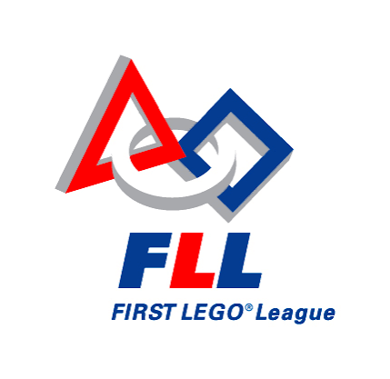
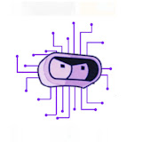
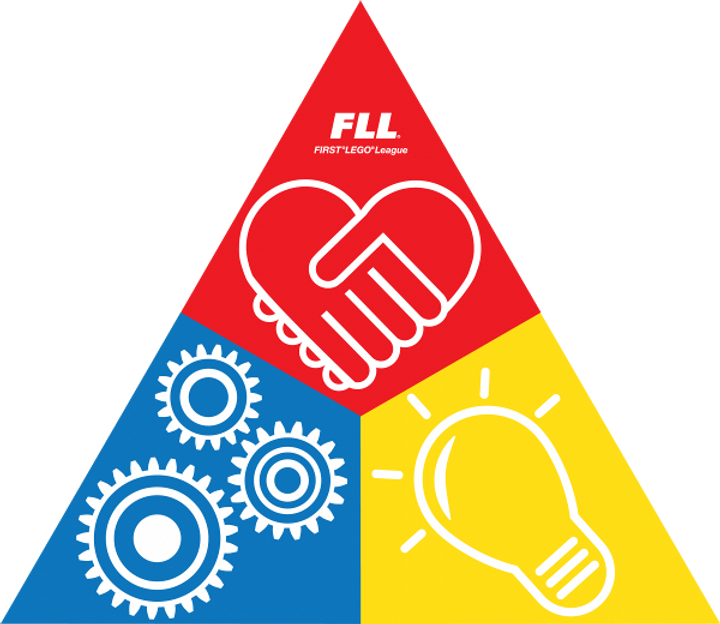

Uma iniciativa educacional da equipe Futurama para disseminação da robótica e dos Core Values da FIRST LEGO League
Equipe: Futurama – FIRST LEGO League Challenge
Local: Osasco – São Paulo – Brasil
Versão: 1.0
Data de criação: Julho de 2026
Documento destinado à:
Mais do que construir robôs, buscamos inspirar pessoas, compartilhar conhecimento e fortalecer uma cultura de inovação, colaboração e impacto positivo dentro da comunidade escolar.
A equipe Futurama, integrante da FIRST LEGO League Challenge, apresenta o projeto “Dia da Robótica Futurama”, uma iniciativa educacional voltada aos alunos do Ensino Fundamental I da instituição.
Este projeto tem como finalidade principal aproximar os estudantes do universo da robótica educacional, proporcionando experiências práticas que envolvem tecnologia, criatividade, resolução de problemas e trabalho em equipe.
A proposta surge da vivência da equipe dentro da FLL, onde aprendemos que a robótica vai muito além da construção de robôs, sendo também uma ferramenta de desenvolvimento humano, social e educacional.
A FIRST LEGO League é um programa internacional de robótica educacional que desafia jovens a resolverem problemas do mundo real utilizando ciência, tecnologia, engenharia e matemática (STEM).
A competição é dividida em diferentes áreas de avaliação, incluindo o desempenho do robô, o projeto de inovação e os Core Values, que representam a base comportamental e ética das equipes.
Mais do que uma competição, a FLL é uma experiência de aprendizado colaborativo, onde os participantes desenvolvem habilidades como comunicação, liderança, pensamento crítico e cooperação.

Os Core Values representam os princípios fundamentais da FIRST LEGO League e orientam todas as ações das equipes dentro e fora da competição.
Eles reforçam a importância do respeito mútuo, da cooperação, da inclusão e do aprendizado contínuo, sendo essenciais para o desenvolvimento dos participantes.
O projeto surge da necessidade de ampliar o acesso dos alunos do Ensino Fundamental I à robótica educacional, permitindo que tenham contato com tecnologia de forma prática, lúdica e significativa.
Além disso, busca-se fortalecer a cultura de inovação dentro da escola, incentivando o interesse por áreas STEM desde os primeiros anos de formação escolar.
Outro ponto importante é o compartilhamento dos conhecimentos adquiridos pela equipe Futurama ao longo de sua participação na FIRST LEGO League, contribuindo diretamente com a comunidade escolar.
Promover uma semana de atividades de robótica educacional para os alunos do Ensino Fundamental I, proporcionando experiências práticas e educativas.
O projeto é destinado aos alunos do 1º ao 5º ano do Ensino Fundamental I.
Cada turma participará de uma oficina exclusiva, adaptada à sua faixa etária, garantindo que as atividades sejam acessíveis, compreensíveis e estimulantes para todos os participantes.
O projeto será realizado ao longo de uma semana letiva, sendo cada dia destinado a um ano escolar específico.
Essa organização permite que cada turma tenha uma experiência completa, com tempo adequado para apresentação, demonstração e atividades práticas.
A fase de planejamento é essencial para garantir a organização e viabilidade do projeto.
A execução ocorrerá durante uma semana dedicada ao projeto, com atividades organizadas de acordo com cada turma.
Após cada oficina, será necessária uma etapa de reorganização do ambiente, garantindo que o espaço esteja adequado para a próxima turma.
A equipe Futurama será organizada em funções específicas para garantir o bom andamento das atividades, incluindo apresentação, suporte técnico, organização dos alunos, registro e controle dos materiais.
O projeto apresenta alguns desafios logísticos e operacionais, especialmente relacionados ao uso de equipamentos, organização de turmas e gestão do espaço escolar.
O projeto prioriza o uso de recursos já disponíveis na instituição. Caso haja necessidade de materiais adicionais, poderão ser realizadas ações como arrecadações internas, campanhas ou apoio da comunidade escolar.
Espera-se que o projeto amplie significativamente o contato dos alunos com a robótica educacional, despertando interesse por tecnologia e fortalecendo a cultura de inovação dentro da escola.
Além disso, o projeto contribui para a disseminação dos Core Values da FIRST LEGO League, promovendo valores como cooperação, respeito e criatividade.
A equipe Futurama reconhece os desafios envolvidos na execução deste projeto, especialmente no que diz respeito à logística, organização de turmas e uso de recursos escolares.
No entanto, reafirmamos nosso compromisso e desejo de realizar esta iniciativa, acreditando em seu potencial de impacto positivo na comunidade escolar e no desenvolvimento dos alunos.